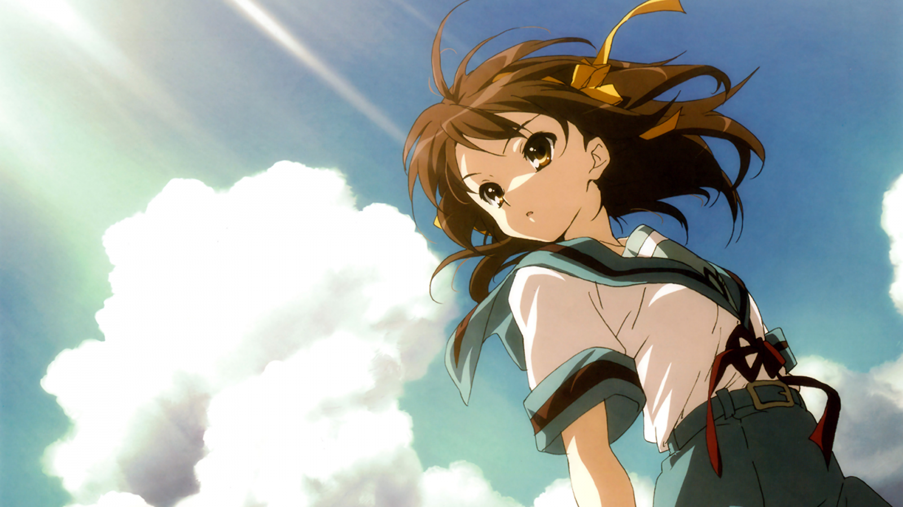

Los mejores animes
CODE GEASS
El 10 de agosto de 2010 a.t.b, el Sacro Imperio de Britannia sobrepasó a las fuerzas japonesas y conquistó el país en menos de un mes, haciendo uso de sus armas robóticas, los Knightmare Frames. Japón perdió su libertad y derechos, y pasó a ser llamada "Area 11 (eleven)". Sus habitantes, ahora llamados "Elevens" fueron obligados a sobrevivir en ghettos. Sin embargo aún persisten grupos que se resisten y luchan contra el Imperio por la independencia de Japon.
Luego de que su padre, el Emperador de Britannia, no hiciese nada para atrapar a los terroristas que asesinaron a su madre y lisiaron a su hermana, un niño llamado Lelouch juró destruir Britannia. Siete años más tarde en el area 11 conoce a una misteriosa chica, con la que realiza un contrato a cambio de un poder llamado "Geass". Con él, Lelouch finalmente tiene el poder que necesita para derrotar a Britannia y realizar sus dos deseos: vengar a su madre y construir un mundo en el.

HARUHI SUZUMIYA
Suzumiya Haruhi no Yūutsu, también conocida simplemente como Haruhi Suzumiya, es una serie de novelas ligeras escritas por Nagaru Tanigawa e ilustradas por Noizi Ito.
GTO
Great Teacher Onizuka, conocido también como GTO, es un spin-off-secuela del manga Shounan Jun'ai Gumi de Tōru Fujisawa, en el cual el personaje de Eikichi Onizuka era un delincuente junto a su mejor amigo, Ryuji Danma, quien además era el narrador de la historia.
YU YU HAKUSHO
Yū Yū Hakusho es una serie de manga escrita e ilustrada por Yoshihiro Togashi. La historia se centra en Yusuke Urameshi, un chico rebelde que muere salvando a un niño de morir en un accidente de automóvil.
HYOUKA
Hyouka es una novela de misterio japonesa de 2001 escrita por Honobu Yonezawa. Es el primer volumen de la serie Classic Literature Club. Se publicaron cinco volúmenes adicionales entre 2002 y 2016.
ONE PUNCH MAN
One Punch-Man es un webcómic de acción y comedia japonés, creado por el artista One e iniciado en 2009. El webcómic rápidamente ganó popularidad, llegando a alcanzar las 7.9 millones de visitas.